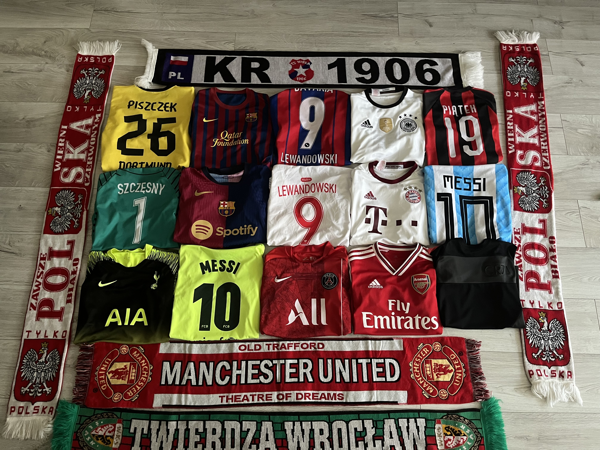
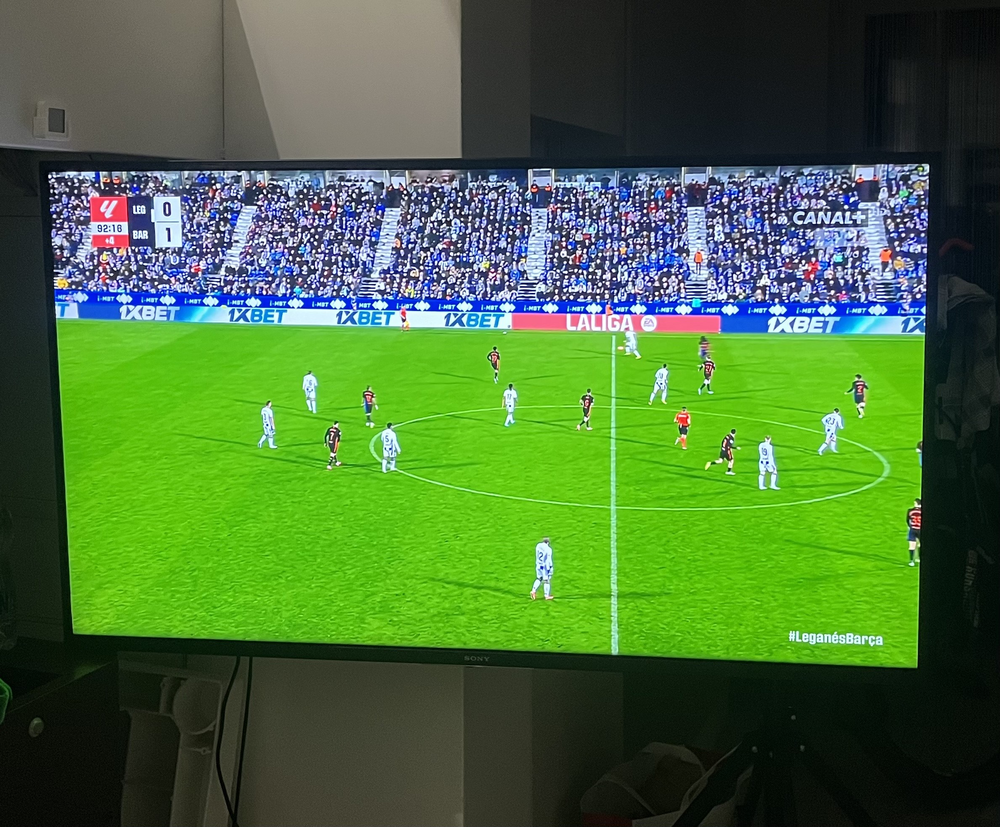
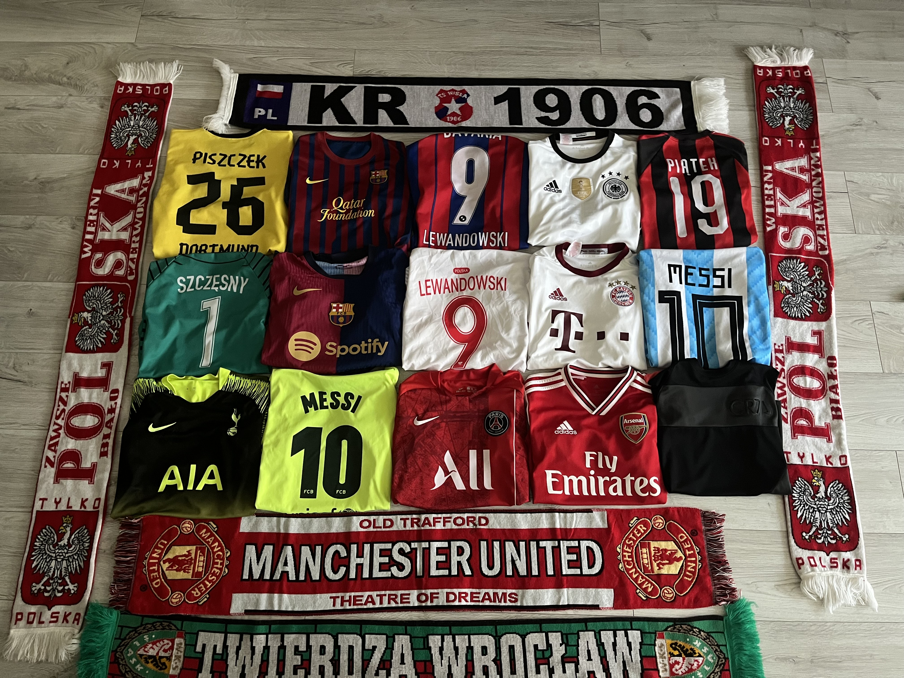
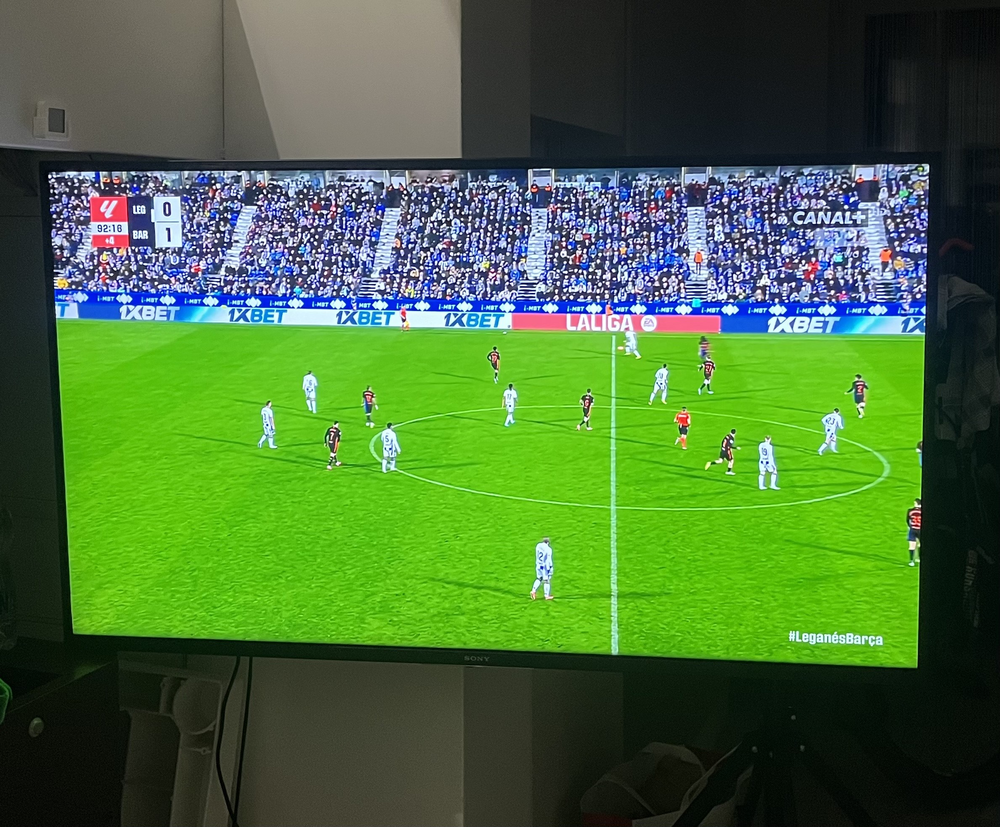

Piłka nożna była moim ulubionym sportem od zawsze. Zacząłem trenować w przedszkolu, kiedy trenerzy z Dalinu Myślenice odwiedzili nasze zajęcia i zachęcili nas do sportu.
Gra sprawiała mi ogromną radość, a po trzech latach przeniosłem się do Orła Myślenice, gdzie trenowali moi koledzy. Z czasem jednak zaczęłem tracić motywację, a po kontuzji i chorobie poczułem ulgę opuszczając treningi,
więc postanowiłem z nich zrezygnować. Po dwóch latach przerwy wróciła mi zajawka — znów grałem sam dla siebie, ciesząc się piłką na boisku i regularnie oglądałem mecze.
Kibicuję FC Barcelonie od przedszkola i do dziś oglądanie ich meczów jest moją ulubioną formą relaksu.
 


